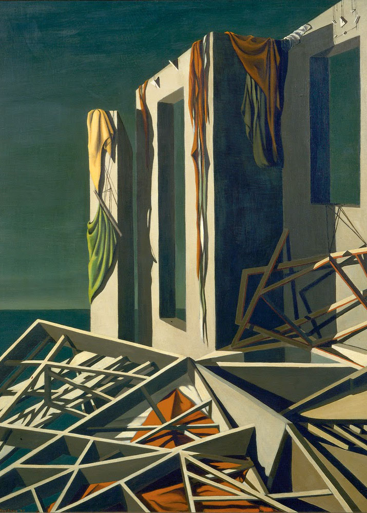

Bliss Street, formerly known as Chintz Davenport Editions, is a micro-press in Queens, NY. We make PDFs and print objects. To procure a copy, email us at ss3789990@gmail.com. Bliss Street is run by Serena Solin and friends.

Click through the images for more.
Paintings by Kay Sage.